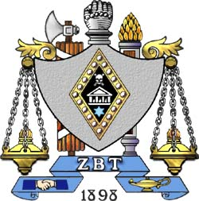
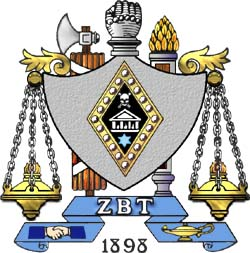

Social Responsibility is the key to keeping our fraternity among the top fraternities in the nation. When it comes to mixers and parties, we are regarded as the 'Mother Teresa' of all fraternities at NYU. We teach our brothers to treat women with respect and equality, we want to be regarded as the classy, nice guy fraternity, and we are proud of it.
I am the Risk Manager of ZBT NYU, and it is my job to keep all our brothers in check in terms of Social Responsibility. If I see a brother doign soemthing disrespectful or degrading to a woman at a party, I instantly pul them aside and talk to them, making sure they are in control of themselves and are able to represent ZBT with the greatest of honor. If they aren't it is as simple as saying, I'm sorry man, you have to go home. It doesn't matter if it is the president of the fraternity, or a brother who I haven't seen in months, everyone gets the same treatment and punishment for inappropriate behavior.
If we weren't a socailly responsible fraternity, our image would be in shambles. No one would regard us as anything, and we would have no image to represent us. We would also have no presense on campus, and thus our rush process would be less than adaquet. In this way Social Responsibility is crucial to the survival of our fraternity and the survival of the love and admiration we feel today as brothers of ZBT.